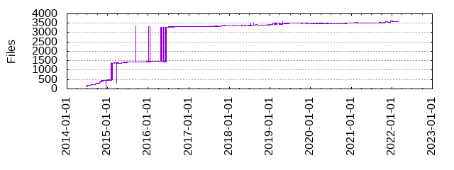

Files
- Total files
- 3597
- Total lines
- 270486
- Average file size
- 5160.27 bytes

| Extension | Files (%) | Lines (%) | Lines/file |
|---|
| 15 (0.42%) | 2242 (0.83%) | 149 |
| almalinux | 1 (0.03%) | 72 (0.03%) | 72 |
| archlinux | 1 (0.03%) | 51 (0.02%) | 51 |
| c | 3 (0.08%) | 2194 (0.81%) | 731 |
| cmake | 6 (0.17%) | 551 (0.20%) | 91 |
| conf | 1 (0.03%) | 27 (0.01%) | 27 |
| cpp | 208 (5.78%) | 51390 (19.00%) | 247 |
| css | 54 (1.50%) | 2734 (1.01%) | 50 |
| debian | 1 (0.03%) | 67 (0.02%) | 67 |
| debian_old | 1 (0.03%) | 70 (0.03%) | 70 |
| desktop | 1 (0.03%) | 12 (0.00%) | 12 |
| fedora | 1 (0.03%) | 70 (0.03%) | 70 |
| h | 199 (5.53%) | 15121 (5.59%) | 75 |
| icns | 2 (0.06%) | 1179 (0.44%) | 589 |
| ico | 1 (0.03%) | 142 (0.05%) | 142 |
| ini | 2 (0.06%) | 40 (0.01%) | 20 |
| json | 2 (0.06%) | 159 (0.06%) | 79 |
| md | 18 (0.50%) | 4334 (1.60%) | 240 |
| mm | 1 (0.03%) | 88 (0.03%) | 88 |
| nix | 1 (0.03%) | 2 (0.00%) | 2 |
| nsi | 2 (0.06%) | 746 (0.28%) | 373 |
| opensuse | 1 (0.03%) | 56 (0.02%) | 56 |
| patch | 3 (0.08%) | 164 (0.06%) | 54 |
| pcm | 4 (0.11%) | 2639 (0.98%) | 659 |
| plist | 1 (0.03%) | 117 (0.04%) | 117 |
| png | 32 (0.89%) | 294 (0.11%) | 9 |
| pri | 1 (0.03%) | 82 (0.03%) | 82 |
| py | 1 (0.03%) | 131 (0.05%) | 131 |
| qrc | 5 (0.14%) | 2937 (1.09%) | 587 |
| qtox | 6 (0.17%) | 1190 (0.44%) | 198 |
| rc | 1 (0.03%) | 0 (0.00%) | 0 |
| rtf | 1 (0.03%) | 154 (0.06%) | 154 |
| sh | 74 (2.06%) | 3415 (1.26%) | 46 |
| source | 1 (0.03%) | 112 (0.04%) | 112 |
| svg | 2851 (79.26%) | 7252 (2.68%) | 2 |
| tiff | 1 (0.03%) | 259 (0.10%) | 259 |
| toml | 1 (0.03%) | 4 (0.00%) | 4 |
| ts | 52 (1.45%) | 155143 (57.36%) | 2983 |
| ttf | 1 (0.03%) | 3856 (1.43%) | 3856 |
| txt | 8 (0.22%) | 1126 (0.42%) | 140 |
| ubuntu_lts | 1 (0.03%) | 108 (0.04%) | 108 |
| ui | 15 (0.42%) | 5547 (2.05%) | 369 |
| wav | 4 (0.11%) | 4892 (1.81%) | 1223 |
| xml | 6 (0.17%) | 10412 (3.85%) | 1735 |
| yaml | 2 (0.06%) | 547 (0.20%) | 273 |
| yml | 3 (0.08%) | 136 (0.05%) | 45 |